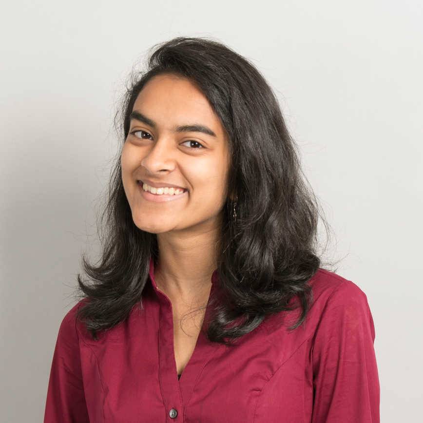

hi, I'm avani!
My mission is to empower people by building human-centric technologies.
An imaginative and logical mode of thinking drives my love for
computer science. As a CS major at Cornell, and in my recent software development
internship at Uncorked Studios,
I have enjoyed using this mindset to carry out complex projects such as
Levar and Risc.
My lifelong interest in education has motivated me to serve as a
course consultant for CS 2110,
as a calculus tutor, and as co-founder, teacher, and advisor for
Summer of CS.
My fascination with languages has driven me to
pursue a minor in linguistics and take Hindi courses.
I believe in the necessity of advocating for diversity in tech.
As Co-President of Women in Computing at Cornell,
I lead a team of 30+ brilliant VPs and directors to foster an inclusive and supportive environment
within Cornell's CIS community.
In my spare time, I can be found singing,
reading, taking aesthetic photos or perusing memes. Feel free to reach out anytime-
I would love to chat!